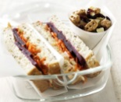

Beetroot, Carrot and Hummus Sandwich
You will need:
- - 2 slices of multigrain bread
- - 1 tablespoon of (bought) hummus. Or you can make it yourself. We have a recipe for that!
- - 1/2 stick of chopped celery
- - 20g (1/4 cup) of grated carrot
- - 3 slices of canned beetroot
Here's how you make 'em:
- 1. Spread 1 slice multigrain bread with 1 tablespoon bought hummus. Top with 1/2 stick celery, chopped; 20g (1/4 cup) grated carrot; and 3 slices canned beetroot. Top with another slice of bread. Cut in half.

Back to recipes.